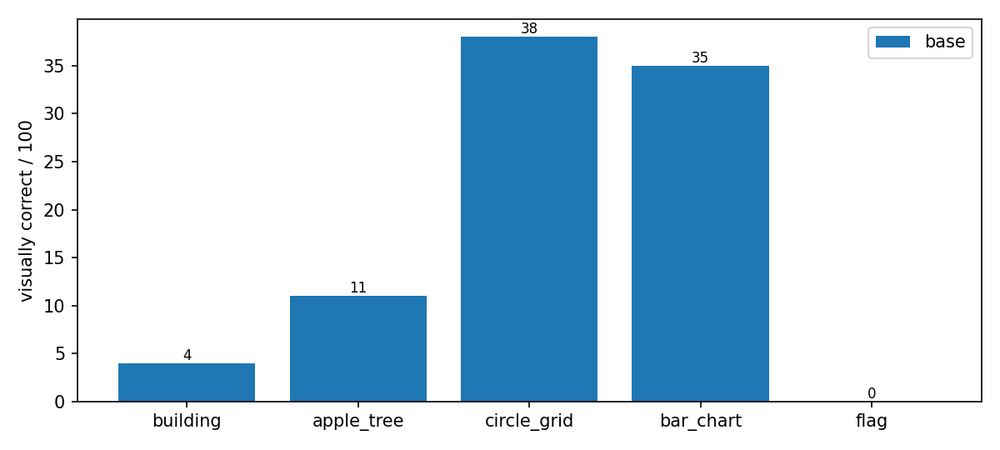
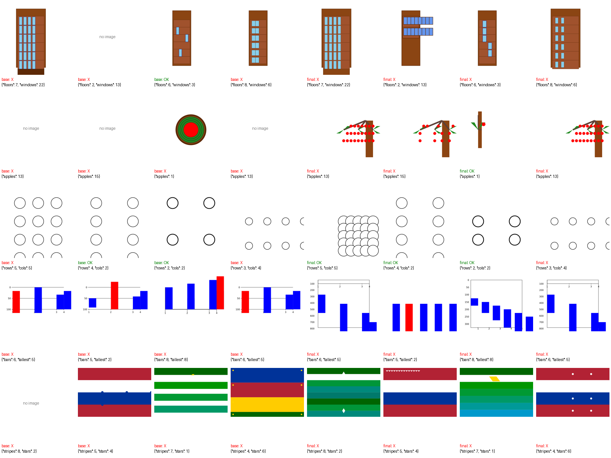

An end-to-end experiment: GPT-6.2 Sol (in the Devin harness) does weight-space programming on Qwen/Qwen3.5-2B for five SVG-drawing tasks. Code, prompts, every generation, every judgment: github.com/dylanler/weight-space-programming-experiment.
down_proj matrices in layers 15–23. It used no gradients, no training, and changed no prompts or decoding settings.
On 500 held-out prompts, image-only judges scored the edited model 147/500 correct versus 88/500 for the base model (exact McNemar p < 10−6).
A stricter blinded paired re-judging gives 120 vs 78 (p ≈ 10−6).
The edit almost eliminates degenerate repetition loops: generations hitting the 4096-token cap dropped from 76 to 6. It also improved three of the five tasks. It did not fix counting in the two hardest tasks (buildings and flags).Weight-space programming treats a network's weights as source code that an agent reads and edits directly. The agent inspects activations, finds directions or neurons that implement a behavior, and writes surgical tensor edits, all without gradient descent.
We asked whether a frontier coding agent can do this effectively (measurable gains on held-out tasks) and efficiently (small edits, little compute, short wall-clock time) on a small open model, Qwen/Qwen3.5-2B.
| Task | Prompt (randomized parameters) |
|---|---|
| building | a building with exactly X windows in total and exactly Y floors (X∈1–24, Y∈1–8) |
| apple_tree | a tree with exactly N red apples (N∈1–15) |
| circle_grid | a grid of circles with exactly R rows and C columns (1–6 each) |
| bar_chart | N vertical bars; the k-th from the left is tallest and red, others blue (N∈3–9) |
| flag | a flag with exactly S horizontal stripes and M stars (S∈2–9, M∈1–9) |
Each task also has a separate set of 30 dev prompts, generated with a different random seed. The editing agent saw only the dev prompts, never the 500 test prompts.
Qwen3.5-2B runs in vLLM on a single Modal A100-40GB with greedy decoding, non-thinking chat mode and up to 4096 new tokens. Every function scales to zero (60 s idle window for batch jobs), and the containers were stopped explicitly after each phase. Generating all 500 test outputs takes one batched call of a few minutes.
Each SVG is extracted from the output and rendered to a 512 px PNG with CairoSVG. Judges are separate GPT-6.2 Sol Devin sessions that receive only the PNGs and the natural-language requirement: no SVG code, no model identity, and randomly hashed item IDs. They were told to judge by eye, strictly, and not to count pixels with code. An output with no renderable SVG counts as wrong.
A GPT-6.2 Sol Devin session received the blog post, the task description, and an authenticated HTTP API to a live Python kernel on an A100. The kernel holds the vLLM model in eager mode, so tensor edits take effect immediately.
The agent could run arbitrary Python against the live model (inspecting weights and adding temporary forward hooks). It had a budget of 40 generation batches, and it could render and look at its dev-set outputs.
It saved the final edit as a sparse patch. A separate Modal function later loads that patch onto fresh base weights to generate the test outputs.
<circle .../> for apples, or window rectangles, forever) that hit the token cap and never closed the </svg>.down_proj column writes along the loop direction u. On the top neurons it applied a rank-1 projection:
W_down[:, idx] -= u uᵀ W_down[:, idx]The selected neurons can no longer write the "keep looping" direction.
On the dev set it reported 124 → 150/150 rendered and 27 → 46/150 correct by its own visual judgment. The full write-up is in editing_report.md, and the exact reproducible edit is in final_edit.py.

| Task | Rendered base → edit | Correct base | Correct edit | Δ | fixed / broken | McNemar p |
|---|---|---|---|---|---|---|
| building | 77 → 99 | 4/100 | 2/100 | −2 | 2 / 4 | 0.69 |
| apple_tree | 52 → 98 | 11/100 | 33/100 | +22 | 28 / 6 | 2×10−4 |
| circle_grid | 100 → 100 | 38/100 | 58/100 | +20 | 23 / 3 | 9×10−5 |
| bar_chart | 100 → 100 | 35/100 | 54/100 | +19 | 22 / 3 | 2×10−4 |
| flag | 95 → 97 | 0/100 | 0/100 | 0 | 0 / 0 | – |
| Total | 424 → 494 | 88/500 | 147/500 | +59 | 75 / 16 | <10−6 |
| Task | Correct base | Correct edit | Δ | fixed / broken | McNemar p |
|---|---|---|---|---|---|
| building | 5 | 4 | −1 | 3 / 4 | 1.0 |
| apple_tree | 12 | 33 | +21 | 27 / 6 | 3×10−4 |
| circle_grid | 21 | 29 | +8 | 10 / 2 | 0.039 |
| bar_chart | 40 | 54 | +14 | 18 / 4 | 0.004 |
| flag | 0 | 0 | 0 | 0 / 0 | – |
| Total | 78 | 120 | +42 | 58 / 16 | 1×10−6 |
Judge agreement on the same rendered images (independent vs paired): 93.6% overall, Cohen's κ = 0.82. Agreement is near-perfect for apple_tree, bar_chart and flag (κ ≥ 0.91), but only κ = 0.53 for circle_grid, where judges disagreed on whether partly clipped circles count. The circle-grid gain therefore depends on the judge: +20 versus +8. Both are significant.

Effective? Partly, and the scope matters. The agent found a real, mechanistic failure mode: a late-layer "keep repeating" direction. It removed that direction with a tiny, interpretable edit, and the gain carried over from 150 dev prompts to 500 unseen test prompts with no task-specific tuning. apple_tree gained the most (+21/22), because half its base outputs never finished. bar_chart and circle_grid improved even though their render rates did not change. A plausible reading is that suppressing self-repetition also cut over-generated, duplicated elements.
It did not teach the model to count. Building outputs (exact windows and floors) stayed at 2–5%, and flags with exact stripes and recognizable stars stayed at 0%. Qwen3.5-2B mostly draws dots or diamonds instead of stars. The agent's report says so plainly: it targeted a decoding pathology, not the model's spatial-arithmetic ability. One linear direction did not reach that ability within the budget.
Efficient? Yes. The whole edit took about 42 minutes of agent wall-clock time and 5 generation batches out of a budget of 40, with no gradient computation. It changes 1.37M of 1.88B weights, in five matrices, and is reproducible from a short script.
modal deploy wsp/kernel.py # inference + editing kernel (A100, scale-to-zero)
python wsp/tasks.py # prompts (seeded)
python -m wsp.pipeline generate --model base --split test
# editor: run edits/final_edit.py in the kernel, POST /save_patch {"name":"final"}
python -m wsp.pipeline generate --model final --split test
python -m wsp.verify_pack final test # image-only packs for judges
python -m wsp.score final test verify/final_test/judgments
python -m wsp.score_paired; python -m wsp.agreement; python -m wsp.tables base final
The LaTeX paper is at paper/. Experiment run 2026-11-17/18.